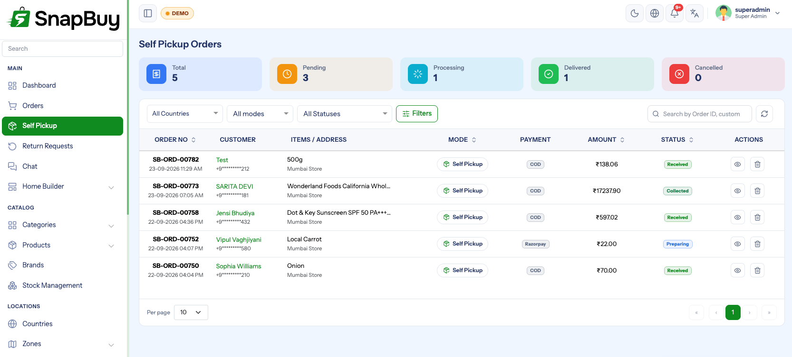
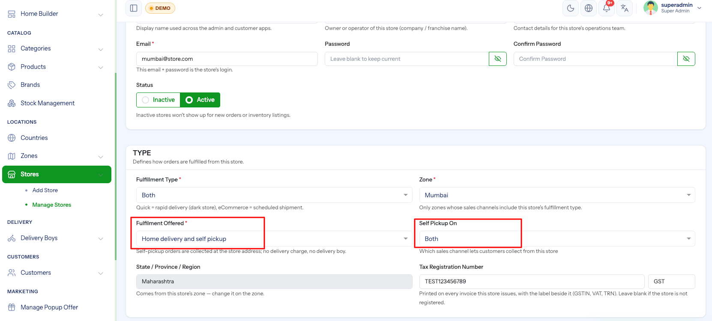

Self Pickup
Menu path: Orders → Self Pickup
Lets a customer order in the app and collect at the store instead of paying for delivery. Nothing is dispatched, no rider is involved, and the order is closed when the customer walks out with it.

Turning it on
Pickup is a per-store setting, because it is the store counter that hands the goods over.
Stores → edit a store → Fulfillment
| Field | Meaning |
|---|---|
| Service Modes | Home delivery only, Self pickup only, or Delivery and pickup |
| Pickup Channels | Which channels may collect — Quick, eCommerce or Both. Only shown when the store serves both channels. |

The store address is what the customer drives to
Pickup shows the customer the store's address, map position, phone number, preparation time and opening hours. Fix a wrong address before you switch pickup on — see Stores.
A pickup-only store never receives delivery orders
Setting Self pickup only removes the store from home delivery in its zone. If it is the only store in that zone, delivery stops there entirely.
What the customer pays
| Charge | On a pickup order |
|---|---|
| Delivery charge | Not charged |
| Surge charge | Not charged |
| Additional charges | Charged when the charge is marked for pickup |
| Free-delivery coupons | Not offered — there is nothing to deliver |
Each additional charge on a zone carries an Applies to setting:
| Applies to | Billed on |
|---|---|
| Delivery | Home delivery orders only |
| Pickup | Self pickup orders only |
| Both | Every order in the zone |
Use "Pickup" for a counter or packing fee
A packing fee that only makes sense when someone collects — or a handling fee you charge only on delivery — is what the Applies to switch is for. A charge left on Both is billed to everyone.
The pickup order flow
A pickup order walks a shorter route than a delivery, on both channels:
| # | Status |
|---|---|
| 1 | Payment Pending (online payment only) |
| 2 | Received |
| 3 | Preparing |
| 4 | Ready for Pickup |
| 5 | Delivered — shown to the customer as Collected |
Cancelled is available throughout. There is no Shipped, no Out for Delivery and no Picked Up — those are rider steps.
Status is set order-wise, not item-wise
An eCommerce delivery order moves item by item. A pickup order is one store, one hand-over, so the whole order moves together — the panel refuses item-wise updates on a pickup order.
What is not available on a pickup order
| Feature | Why |
|---|---|
| Assigning a delivery boy | Nobody delivers it |
| Courier tracking | There is no shipment |
| Estimated delivery date | The store's preparation time is the wait |
A billing address is still required
Even though nothing is shipped, a pickup order needs a billing address — invoices and tax depend on it.
Cash on collection
A COD pickup order is paid at the counter when it is collected. The payment is recorded against the order the moment you mark it collected; no rider cash-collection ledger is involved.
Mark it collected only after the customer has it
Marking collected closes the money on a COD order. Do it at hand-over, not when the bag is packed — that is what Ready for Pickup is for.
Working the list
Orders → Self Pickup shows only pickup orders; Orders shows only home delivery. The two pages otherwise behave the same way — see Orders.
On a pickup order the location column shows the store rather than the customer's city, because that is where the order is waiting.
Notify the customer at "Ready for Pickup"
The order_status_ready_for_pickup_customer notification is what tells someone their order is waiting at the counter. Make sure it is enabled in Notification Settings, or customers will keep phoning the store.
Permissions
Self pickup has its own permissions, separate from delivery orders, so counter staff can be given pickup and nothing else:
self_pickup_order_list, self_pickup_order_update, self_pickup_order_delete
See Roles & Permissions.
Troubleshooting
| Symptom | Cause | Fix |
|---|---|---|
| Pickup not offered in the app | Store's service mode is delivery only | Set Delivery and pickup or Self pickup only |
| Pickup offered on the wrong channel | Pickup Channels is set to one channel | Change it to Both |
| Customer charged for delivery | The order is a delivery order, not pickup | Check the order's mode chip in the list |
| An extra fee appears on pickup orders | An additional charge is set to Both | Set its Applies to to Delivery |
| Cannot assign a delivery boy | Correct — pickup orders have no rider | Move the order through Preparing → Ready for Pickup |
| Cannot update one item's status | Pickup orders move order-wise | Update the whole order |
| Customer never told it was ready | The Ready for Pickup notification is off | Enable it in Notification Settings |
Checklist
- Store's service mode set, with the right pickup channels
- Store address, map pin, phone and opening hours correct
- Preparation time set on the store
- Additional charges reviewed for Applies to
- Ready for Pickup notification enabled
- Counter staff given the self-pickup permissions
- One test pickup order taken through to Collected